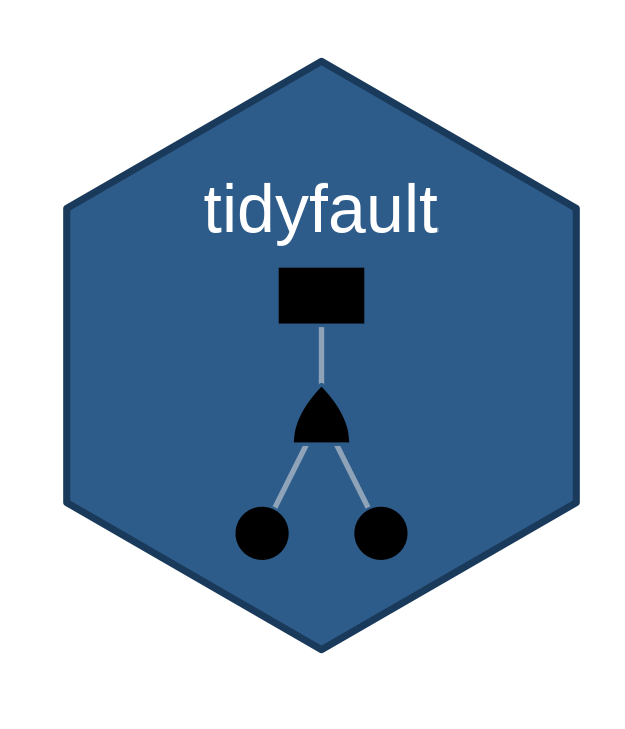

Better Fault Tree Analysis for Complex Systems with tidyfault
A tidyverse-friendly R coding framework for fault tree visualization and simulation

Systems Engineering, Cornell
Aquila Hash, Inc.
Better Fault Tree Analysis for Complex Systems with tidyfault: A tidyverse-friendly R Coding Framework for Fault Tree Visualization and Simulation
Fault tree analysis (FTA) is a systematic method for identifying combinations of component failures that lead to system-level failures, widely used in complex systems modeling for high-risk reliability engineering (e.g. rockets, nuclear power plants, etc.). While existing R packages provide FTA functionality, they lack integration with the broader tidyverse ecosystem, making it difficult to programmatically construct fault trees, visualize them using modern graphics tools, and integrate FTA workflows into reproducible data analysis pipelines.
This paper introduces tidyfault, an R package that provides a unified, pipe-friendly workflow for fault tree analysis, built on R’s ‘tidyverse’ principles. By representing complex system logic as "tidy" data frames of nodes and edges, the package allows researchers to leverage the full power of functional programming and visualization in R. The package implements a pipeline for processing fault trees from nodes and edges through boolean equation extraction, truth table generation, and minimal cutset identification using a custom R implementation of the Method of Obtaining Cut Sets (MOCUS) algorithm. Additional functions support binary scenario evaluation, probability computation, and ggplot2-compatible visualization, helping bring FTA fully into modern R data science workflows. Unlike traditional GUI-based FTA tools, tidyfault allows for the batch evaluation of thousands of failure scenarios, making it uniquely suited for the high-dimensional simulations typical of complex systems research.
We demonstrate the package’s functionality through case studies involving security systems and database failures. These examples highlight how tidyfault can identify critical vulnerabilities and single points of failure within socio-technical systems. It is the authors’ hope that tidyfault’s reproducible, programmatic fault tree analysis framework will help a new generation of systems engineers scale up their FTA analyses to match the growing size and scope of modern complex systems.
Complex systems fail in combinations
- Redundancy, cascades, common causes
- Rockets, reactors, networks, organizations
- n on/off events → 2n possible worlds
- Fault trees: the logic of how failures combine
- Usually a drawing in a GUI, solved by hand
A fault tree is a network: two tables
| id | event | type |
|---|---|---|
| 1 | T | top |
| 2 | G1 | and |
| 3 | G2 | and |
| 4 | G3 | or |
| 5 | A | not |
| … | … | … |
| from | to |
|---|---|
| 1 | 2 |
| 2 | 3 |
| 2 | 4 |
| 3 | 5 |
| … | … |
- A directed acyclic graph
- Logic lives in the gates
- Top event → exactly one gate
- Same tables as tidygraph, igraph
Six verbs, one pipe
# two tables in, cut sets out gates <- curate(nodes, edges) f <- gates |> equate() |> formulate() calculate(f) concentrate(gates) # "B*C" "A*B*D"
- Every step returns data
- No hidden objects
- Branches: quantify(), simulate(), plot()
Run it in the browser: R, via webR
[LIVE EMBED · tidyfault.netlify.app]library(tidyfault) gates <- curate(nodes = fakenodes, edges = fakeedges) concentrate(gates) quantify(formulate(equate(gates)), c(0.10, 0.20, 0.05, 0.15), prob = TRUE)
Same page, same example: Python, via Pyodide
[LIVE EMBED · tidyfault.netlify.app]import tidyfault as tf gates = tf.curate(tf.data.fakenodes, tf.data.fakeedges) tf.concentrate(gates) tf.quantify(tf.formulate(tf.equate(gates)), [0.10, 0.20, 0.05, 0.15], prob=True)
Figure → cut sets → probability
Thousands of scenarios, one call
quantify(f, worlds,
prob = TRUE)
- One row = one possible world
- Uncertain inputs → a distribution
- No GUI, no clicking
50 gates: 19 s in R, 2 s in C++
- Same MOCUS, R vs C++ (Rcpp)
- C++ is the default
- 500 runs: identical cut sets every time
- Beyond ~50 gates: the algorithm, not the language
Where can data leak out?
LR*MN*PM
MN*PC*PM
PO*VS*WB
- People + software + insiders
- No single point of failure: every path needs 3
- MN and PM sit on 2 of 4 paths
- Harden those first
One grammar, two languages, one repository
# R gates <- curate(nodes, edges) f <- gates |> equate() |> formulate() calculate(f) concentrate(gates) quantify(f, c(.1, .2, .05, .15), prob = TRUE)
# Python gates = tf.curate(nodes, edges) f = tf.formulate(tf.equate(gates)) tf.calculate(f) tf.concentrate(gates) tf.quantify(f, [.1, .2, .05, .15], prob=True)
R is the reference · the Python twin caught 3 places R disagreed with itself
- Fault trees are logic networks
- Tidy tables in, cut sets out
- Simulate thousands of worlds, not one diagram
- Same grammar in R and Python
remotes::install_github("timothyfraser/tidyfault")
pip install \
"git+https://github.com/timothyfraser/tidyfault#subdirectory=python"